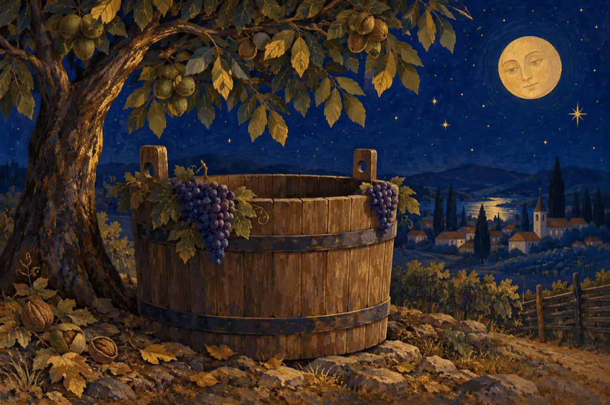

Zarvă mare
Zarvă mare în tot satul
S-au copt strugurii în vii
Se pregătește culesul
Școala a-nceput copii!
Un nene spală butoiul
Dându-l de-a dura prin curte
Ca să țină curat vinul
Pentru asta-l opărește!
Altul zdravăn bocănește
Bătând cercuri peste doage
Și cu ciudă le lovește
De fapt el butoi își face!
Căzile toate așteaptă
Puse sub nuc pentru umbră
Culesul dă să înceapă
Un cioban mulge oile la strungă
Copiii au ieșit la joacă
În poiana satului
După minge toți aleargă
Și-așteaptă ziua culesului
Și dulceața mustului!
Vasile Groza